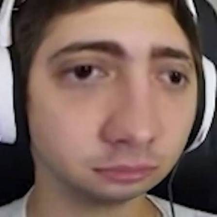

Sua trajetória
Alan Ferreira Pereira, conhecido como Alanzoka, nasceu em São Paulo em 13 de maio de 1990. Ele começou sua carreira na internet em 2011 com o canal ElectronicDesireGE (EDGE) no YouTube, focando em Minecraft, jogos cooperativos e clássicos de terror, como Amnesia, antes de se tornar um dos maiores streamers da Twitch no Brasil.
Escrito por: Luiz Otávio